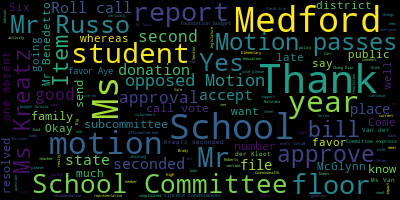

AI-generated transcript of Medford School Committee meeting February 4, 2019
English | español | português | 中国人 | kreyol ayisyen | tiếng việt | ខ្មែរ | русский | عربي | 한국인
Back to all transcripts
[Burke]: present, six present, one absent. All please rise and salute our flag please. I pledge allegiance to the flag of the United States of America and to the Republic for which it stands, one nation under God, indivisible, with liberty and justice for all. Approval of the minutes of January 14, 2019. Motion to approve the minutes by Mr. Russo. Is there a second by comment Mr. Benedetto.
[DiBenedetto]: In the minutes we talked about our having I believe a committee of the whole I don't know if it's in the minutes on health and I was wondering if the committee wanted to go to Zumba before we have that committee meeting and just get a little workout and get our blood flowing I was at Zumba up the high school and I spoke the instructor and she'd be she'd love to have us all so When we schedule that, if we want to do that, I thought it would be, since it's about health and movement, it would be a fun way for us to all have a good time together and then sit and talk about the health of our students.
[Burke]: Is there a second on the floor? Seconded by Ms. Kreatz. All those in favor? Aye. All those opposed? Motion passes. Approval of bills, transfer of funds. Motion on the floor by Mr. Russo, seconded by Ms. Kreatz. Roll call vote, please. Mayor Burke. Mr. Benedetto. Thank you. I had some questions regarding the bills. Ms. Patterson.
[DiBenedetto]: Thank you. So on page 2 of 21, the top three items, The item, the vendor name is Amici's Pizza, and the account description is building repairs.
[Patterson]: Yes, so that's food for the inmates while they are doing work within the buildings. That makes sense.
[DiBenedetto]: When I was reading it over the weekend, I'm like, okay. Yeah, that's great if that's how we're paying for building repairs and upgrades. It lines down, it says professional technical services education and it lists a Mr. Lino. I keep seeing his name throughout the... Yes, it's the evening school.
[Patterson]: He provides training for the evening school program.
[DiBenedetto]: Okay, thank you. On page 14 of 21. Sorry for jumping around. I'm just trying to get acclimated. Three quarters of the way down, in the amount of $6,877 and $4,776, it says Trustees of Boston.
[Patterson]: I don't know if it's college. Yes, that's tuition for special education services under Circuit Breaker. Oh, OK.
[DiBenedetto]: OK. And then. I believe that's all of them. Thank you.
[cflR-3VqII8_SPEAKER_20]: Very good.
[DiBenedetto]: Roll call vote, please. Yes.
[cflR-3VqII8_SPEAKER_20]: Yes. Yes. Yes.
[Burke]: Yes. Six in the affirmative, one absent. That's in favor. Approval of payrolls. Motion to approve by Ms. Kreatz, seconded by Mr. Russo. Roll call vote. Yes.
[cflR-3VqII8_SPEAKER_20]: Yes, 6 in the affirmative, 1 absent.
[Burke]: Motion is approved. Report of Secretary. Revised. Former Secretary report. Kathy Kreatz. Is there a revised report?
[SPEAKER_13]: I left out the names. So I just want to go through the names again. I want to thank the City Hall, the Finance and Auditing Department. I also want to thank the Griffin High School, Accounts and Payroll and Valuation Department, and the JoJo Department. And I want to give a special thanks to Kelly Cavanaugh, Cynthia Byrne, Juwanda McGraw, Michelle Kagan,
[Burke]: Motion to place this report on file by Mr. Kreatz, seconded by Ms. DiBenedetto. All those in favor? Aye. All those opposed? Motion passes. Report of committee. Support Services Subcommittee. It's the Medication Administration Policy. Mr. Russo, chair of that committee.
[Ruseau]: So the Support Services Subcommittee met in August of last year, which I recommend in the future. It was very, very hot. Very hot. Sorry about this. And we met to update the medication administration policy for the district. It had needed a lot of updates. And the Support Services Subcommittee met just before this meeting. Most approved the policy to come before the full committee. There were some clarifications around busing, situations when nursing was not available, and self-administration changes were made to the policy. And that is about it.
[Burke]: Very good.
[DiBenedetto]: Mr. Benedetto. Thank you. I read through the policies, and I really like a lot of the updates. There is something that I came across with a parent recently that I'd like to see added, and that is a school nurse may not consult with the student's physician and get medication orders without parental permission.
[Wray]: So let me clarify that. Following the Department of Public Health regulations, when nurses are administering medications, it is within the Board of Registration and Nursing guidelines that we have access to physicians to clarify I'm not aware of any medication orders.
[DiBenedetto]: Right. Clarification is one thing. Getting a different order from a doctor without a parent being notified is a major issue that I feel that this needs to be added, that parental permission for any, you know, changes. Like a nurse is calling a pediatrician. Getting a change in a child's medication order or And not notifying a parent is not appropriate. And so therefore, I want to make sure parental notification is either given prior to that phone call or after that phone call that an order has been changed. Because in this situation, the parent was never notified of the change from her child's physician to the school.
[Wray]: I think probably you and I should talk about that situation in private.
[DiBenedetto]: No, I think it should be a policy on this document. And I don't think it's a conversation privately. It should never have happened to any parent to find out in a meeting in that it should be part of this policy. And there is a motion on the floor.
[Burke]: What section are you amending?
[DiBenedetto]: Under Medication Orders, Parental Consent. Yes.
[Wray]: What page is that in?
[Burke]: It's the first page of the school. It starts on the first page.
[DiBenedetto]: Page one.
[Burke]: And then which one are you? Item two says a school nurse shall ensure that there is written authorization by the parent or guardian.
[Wray]: So that's a consent form.
[DiBenedetto]: A consent to administer medication, but not to call. Yeah, to administer it. But this particular situation was the nurse called the doctor, the order was changed after that conversation and the parent was never notified that they called the doctor or that an order was changed and the parent got no notification. So I want that addressed in this policy since we're reviewing it. I don't think that any parent would want the school nurse to change their child's orders with their doctor and not be notified.
[Burke]: Is that customary?
[Wray]: It's customary to call the physicians for clarification. But there was a change, and the parent wasn't notified. I don't think this is the place for us to discuss this.
[DiBenedetto]: Oh, it absolutely is, because we're talking about policy changes in this department at this meeting, and that's something that I had firsthand knowledge of happening, and it should be addressed in these policies.
[Edouard-Vincent]: thing would be for us to bring it back to the subcommittee and address it in subcommittee. So motioned.
[Van der Kloot]: Ms. Van der Kloot. Thank you. Would it make sense, since we have the rest of the policy here, to go ahead with the approval so everything else is updated and... I'd rather this... This is such an important issue. I do have respect for... We have a meeting next week.
[Burke]: Maybe we can bring it back next week so that it's not... Are you making a motion to send this back to the subcommittee for further deliberation?
[DiBenedetto]: Actually, I'm asking to amend the policy and add that a school nurse may not consult with the student's physician and get medication orders or changes without parental permission.
[Burke]: Where do you want that?
[DiBenedetto]: I want that in section E. Section what? E.
[Edouard-Vincent]: E. I feel it should go back to subcommittee. There's a motion on the floor to add it.
[Burke]: There's a motion on the floor to amend it under section E. We're in section E. We need to be specific. This is a policy, so it has to be specific.
[Van der Kloot]: Mayor Burke. Ms. Van der Kloot. Erin, I understand your concern and the importance of what you're saying. I have some questions about how it should be worded correctly, because there's also an obligation by the physician as well. So to just put all the onus on how we write it has to include both parties. And so I'm reluctant to all of a sudden just put a sentence in here and say we're going to approve it tonight. I'm hearing your concern. I understand there was an issue that I know nothing about. but I'm asking that we would give us an opportunity, you know, we could perhaps do it at the beginning of our next meeting. We could also have a subcommittee meeting, so we could bring it back next week. Wouldn't it be a long time frame? Would that be acceptable?
[DiBenedetto]: I remove my amendment and again ask it to go to subcommittee, so that way the wording is correct.
[Burke]: So you're asking to send this back to subcommittee?
[DiBenedetto]: Right, but I don't want the document approved until this issue is. Fine. So.
[Burke]: It's a motion on the floor to send this to subcommittee.
[Van der Kloot]: Second it with the added.
[Burke]: Second it.
[Van der Kloot]: We do not have anything before our meeting next week. Is that correct? We have.
[Burke]: The chair of the subcommittee would call the meeting.
[Edouard-Vincent]: No. Next week's meeting, we do have committee of the whole at 615. And then we will also have executive session on Monday the 11th.
[Van der Kloot]: OK. So we have to figure out when we can do that.
[Edouard-Vincent]: OK.
[Van der Kloot]: Anyway, we'll do it as quickly as possible. Mr. Russo.
[Ruseau]: I just have a question about this policy. And unlike other policies, we don't just approve the policy. The school physician actually has to approve it as well.
[Wray]: The school physician signs off on it, along with myself and the superintendent.
[Ruseau]: OK. So I mean, that's why I think that moving it to subcommittee also makes sense. OK.
[Wray]: So if we have a date for that, then when we do, yes, then I'll invite Dr. Sabia to join us.
[Burke]: Okay, there's a motion on the floor to move this paper to subcommittee, seconded by Ms. Van der Kloot. All those in favor? Aye. All those opposed? Motion passes. Okay. A motion for suspension of the rules, Ms. Van der Kloot?
[Van der Kloot]: Mayor Burke, yes, I'd like to suspend the rules and I would like to change the order of the rules. I'd like to have the superintendent's updates and comments follow item four. Please.
[Burke]: There's a motion for suspension of the rules. All those in favor? Aye. All those opposed? Motion passes. Before us right now is item 2, report on project 351. Ms. Caldwell, Margaret Hines, and Vishal Romero.
[Caldwell]: Good evening, everyone. So Project 351 is an independent nonprofit organization that builds a movement of youth-led service by engaging unsung heroes from each of the Massachusetts 351 cities and towns. United for a year of leadership and service, ambassadors transform communities, elevate kindness, advance social justice, and gain courage, compassion, and capabilities to lead change. This was founded by Governor Deval Patrick in 2011 and now convened by Governor Charlie Baker. Project 351 fosters unity and strengthens the ethic of service to the engagement and enrichment of 8th grade ambassadors from each of the cities and towns. As a member of 351, ambassadors represent their family, school, and community with honor, humility, and pride. Over a year's term, they engage with a community of peers, team-based service projects, and leadership development opportunities. respect, a cooperative spirit, and fun are hallmarks of successful ambassador teams. Ambassadors are expected to do their best as a member of 351. They are encouraged to use the service and leadership skills they develop to address important issues facing their local communities. A representative from the Andrews and McGlynn's Middle School participated in this event the weekend of January 19th. I've asked these students to tell you a little bit of what they've learned and what they will do moving forward. At this time, I'd like to invite Principal Nick Tucci up with his guest, Margaret Hines, to talk a little bit about Project 351, and then Michael Downs, the principal of the Andrews School, to come up as well.
[Burke]: Mr. Tucci? Welcome.
[Tucci]: Good evening, everyone.
[Burke]: Good evening.
[Tucci]: Good evening, Medford School Committee. It's my pleasure to be here tonight to speak with you about the involvement of two of our middle school students in Medford who participated in last month's Project 351 launch day on Saturday, January 19th in Boston. 8th grade McGlynn Middle School student, Margaret Hines, and 8th grade Andrews Middle School student, Vishal Romero, were nominated by their teachers and selected by their school principal to represent our community. These 8th grade students who represented Medford were chosen on the basis of Project 351's core values of their ambassadors, which are kindness, compassion, humility, and gratitude. According to Project 351's mission, They seek to develop the next generation of community-first service leaders through customized service learning, hands-on community building, and values-based leadership training. Both Margaret and Vishal had wonderful experiences on launch day at Faneuil Hall in Boston, where they got a chance to hear Governor Baker address the young leaders, perform acts of kindness in their community, and engage in leadership activities that will be a lifetime experience for them all. They had the opportunity to develop their leadership skills to one day uplift, unite, and transform the communities in which they live. We look forward to supporting their leadership project this year through their clubs within the schools, such as the Student Council and the CCSR, Census for Citizenship and Social Responsibility, where they can carry through with their projects. At this point in time, I'd love to turn it over to the McGlynn Middle School representative, Margaret Hines.
[SPEAKER_17]: Thank you. And my name is Margaret Hines, as you just heard. And I'm the eighth grade representative for the McGlynn Middle School. And I wrote a reflection that I would like to share with you here today on my experience at launch day of Project 351. So Project 351 had actually never been on my radar until I was asked to participate in December of 2018 by my principal, Mr. Tucci. As an eighth grade student going into a day-long community service project on the weekend that I'd never heard before, I didn't know what to expect at all. At the time, I had no inclination that I would have such a wonderful and amazing experience at Project 351, nor did I have any idea that I would find a whole community of people who all are devoted to creating a better world. My day at Project 351 was full of incredible opportunities and phenomenal people, and I'm glad to say that this first meeting is only the start of a remarkable year of service to come. The day I spent at Project 351 was a great blend of hearing from community leaders, meeting other eighth graders from across the state of Massachusetts, and taking action through community service. The morning was kicked off at 8 when we all boarded our regional buses to Faneuil Hall. On the bus, the alumni of Project 351 answered some of our initial questions and played some ice breakers with all of us. This first bus ride of the day was when I realized that everyone here was willing and open to starting a conversation to find out more about who everyone else was. and is. Therefore, there is something to be said about the beauty of a place where everyone else you meet is new, and everyone else they meet is new. And there's no way to be clicky or awkward about it, because you're all just saying hi to each other, and you're all in the exact same position. After our regional buses dropped us off at Faneuil Hall, we all found our service hero groups, each named after someone who had contributed to making the world a better place all their life. After learning about our service heroes and meeting with our teams, the leaders of Project 351 explained how the day was going to go. And our Massachusetts community leaders came to speak about their experiences with service and leading in the Commonwealth. Leaders such as Congresswoman Ayanna Pressley, news anchor Lisa Hughes, and Governor Charlie Baker all shared their experiences with us and talked about how community service has the power to impact the lives of all people, whether you're the one doing the service or on the receiving end of the benefits. Once these leaders were done sharing their stories and advice, we all headed out to do some community service of our own. My team went to a school in the Boston area and collaborated with a group called Service Village and the Martin Richard Foundation to create packages of books for underprivileged children and Valentine's Day cards for veterans. Since there were over 351 of us, not all groups went to the same places. Some of us went to work with an organization called Cradles to Crowns. And some of us went to paint the inside of an old preschool. While at the service sites, we had more time to talk to each other and learn more about where everyone else was from and learn more about how we as a state can come together to create positive change. Being an eighth grader who lives in Medford and has never lived anywhere else, it can be easy to forget that Massachusetts is a really big place. And there are lots of places in Massachusetts with lots and lots of people, who, surprise, are also from Massachusetts. In the afternoon, Around 3, we all piled back onto our buses and headed back to Faneuil Hall. For the last few hours of the day, we shared our experiences at our different service sites, talked about what we learned, continued to meet even more new people, there were a lot of us, and even filmed a good luck message for the Patriots. By the end of the day, we were all exhausted in the best way and happy to go home. One of the messages of Project 351 taught me was to not hesitate to start making change in my community. Project 351's motto of Unite, Act, Lead is a perfect summary of how this may be done. The first step in any movement for change is to unite, to bring together your community around one shared goal and to make sure everyone is heard in uniting towards this goal. The second step is to act. Acting can mean many things. It can mean to have one large change come over a community at once, or it can mean to bring change through small steps, eventually leading up to a larger picture. Either way, the ability to act also means there must be an ability to lead. In leading, you are bringing the circle to a full close and allowing positive change to happen and continue happening. The main question brought about in my time at Project 351 was, how can I bring these changes to my community? And well, the answer isn't simple. Everyone has a different town, school, family, city, you name it. It would be impossible to come up with a one-size-fits-all formula to apply to any community situation, which is why it is important to put basic principles in place, principles such as the ones given by Project 351's message of Unite, Act, Lead. In bringing these founding principles to our Medford community, we would be able to accomplish so much more and be able to inspire so many more young people to come forward and lead positive change. In many situations, communities are improved by just allowing for a safe place for discussions about change to grow. We don't even have to know what those discussions might be as long as we're open to hearing about them. Change that comes in leaps and bounds doesn't often knock on the door until later in the conversation. So if we're aiming to create a community in which we work our hardest to take action, we must first realize that the only way to continue in unity is to listen to the ideas and opinions of our peers. Thank you. Very good.
[Tucci]: Thank you, Margaret. It's now my pleasure to turn it over to Mr. Downs, principal of the Andrews Middle School and Vishal Romero.
[ih84fneWXk0_SPEAKER_00]: Good evening, everyone. With not much of a do, I would like to introduce Vishal Romero. But I would like to publicly thank one teacher in particular, and that would be Mr. Ian Levine, a social studies teacher on my AB side, along with several teachers who recommended Vishal. He stood out by writing a very nice and long recommendation for Vishal. So with him, I would like to give him some public credit for that. Thank you. Thank you.
[SPEAKER_00]: When Principal Downs asked me about Project 351, I had not heard of it before. Soon, however, I was fully registered for launch day. The coordinators kept in contact with myself and all of my fellow ambassadors, and after several informative emails and one conference call, I was ready for the big day. I woke up early on the 19th and went to the centralized bus stop that had been assigned to me. There, we were picked up by a regional bus. When we reached Boston, the almost 400 ambassadors from all 351 towns and cities in Massachusetts gathered in Faneuil Hall. There, for the launch of our day, we listened to several speeches from people like Governor Charlie Baker, First Lady Lauren Baker, and Congresswoman Ayanna Pressley, among others. After the ceremony, the ambassadors split up into large groups. Each set of service hero groups are smaller organizational groups, left to go to one of the service sites. I went to the McKay School, where some service hero groups painted murals and others packaged thank you care packages for the staff of the school. Other groups in different service sites helped with other projects, such as packaging food for the Greater Boston Food Bank. We spent two hours of our day working on these community service projects. We reconvened later at Faneuil Hall, as we could not go to the Kennedy Library due to the government shutdown. We talked about our day of service, and ambassadors from every service site spoke about what was accomplished. The regional buses then arrived, picked up their assigned students, and departed. Launch Day was a chance for myself and all of the other ambassadors to meet people from all over the Commonwealth. This means that we build connections from as far away as the Berkshires. We can use these connections for advice from our peers. Launch Day also gives those in our communities opportunities for service. In the Spring Service Project 351, we will donate to Cradles to Crayons, an organization that provides everyday necessities to children. Students in the Andrews Middle School and the McGlynn Middle School that are members of the National Junior Honor Society or else participate in clubs like the CCSR can participate in this spring project. Anyone can serve. We are just ambassadors.
[Burke]: So impressed, are we not? Very, very impressed with both of you. Amazing delivery. And I'm sure you learned a lot that day. Take it home and continue to be an ambassador in our community. We look forward to it. Is there a motion on the floor to accept this report and place it on file? Ms. Mustone, seconded by Ms. Vandeclude. All those in favor? All those opposed? Motion passes. The next item up is the report on Judge Klein's visit to our schools by Ms. Caldwell.
[Caldwell]: Judge Sandra R. Kline, a federal bankruptcy court judge from Los Angeles, California, visited our grade 5 elementary and grade 8 students' girls on January 22nd and January 24th. Judge Kline serves as a United States bankruptcy judge for the Central District of California. She has been committed to public service with a focus on educating, mentoring, and giving back to her community. Originally from Medford, Judge Klein attended the Gleason, Hobbs, and Medford High School. Her mom and dad still live here in Medford by Playstead Park. A quick hello to them, they're watching tonight. The purpose of Judge Klein's visit was to empower and instill confidence in our girls. She wanted them to know that they can do anything they want to if they work and study hard. Judge Klein gave a brief summary of her background and explained different challenges that she had and how she overcame these challenges. She wanted the students to think if she can do it, they can do it as well. Judge Klein discussed going to school at UMass Lowell for music education and then deciding to change her career and apply it to law school. Her mom said to her, you know, I'm not sure you want to be a music education teacher, but you argue with me on a regular basis, so maybe you should go into law. She wanted the students to know that life does not always go as planned. Sometimes there are roadblocks or setbacks, but if you persevere, you can accomplish your goals. Ms. Klein told the students to volunteer and not hold back. She also stated, it is better to try and fail than to never have tried at all. Always put your best foot forward and try to be prepared for what comes your way. She encouraged the girls to be kind, to hold a door for someone, greet people with a smile. It could make a difference in someone's life. One of the most important statements made by Ms. Klein was to never give up. Sometimes there are obstacles in your life, but keep focused and move forward towards your dreams. The girls asked pertinent questions about what it's like to be a judge, what led her to California, and about her judicial responsibilities. The presentation also instilled confidence and a sense of self-control in our girls. I would like to just read to you a few of the things that the students wrote to Judge Klein. I left you with the biography as well. Baraket Rumacab of the Andrews Middle School wanted you to know that it shouldn't matter, that Judge Klein said, it shouldn't matter what you have been through. What matters is how hard you work to achieve your dream and change your life for the better. She just thought that Judge Klein was an amazing woman, an amazing role model for her. This was the grade 8 Andrews School. We also had a fifth grade student at the Columbus School that wrote a letter to Judge Klein that said, thank you for taking time out of your day to visit the Columbus Elementary School. We appreciate the talk that you had with us. One thing I know that will stay with me is when you said that girls can do whatever boys can. That inspired me to do any job I want to do, and I learned that there is no specific job for one gender. You were an inspiration to me and others. Keep doing what you're doing because it is amazing. One of the students from the Roberts Elementary School had a question for Judge Klein, which was, if you could change a law, what would it be? And Judge Klein thought about it, and she said, you know, I have to think about that for a little bit. And just the other day, she sent me an email, and she said, please forward this to the student. what I would do is make it a law that you can never do a government shutdown again. Because it really impacted. And when I listened to Vishal just talk to us about how we couldn't go to the JFK Library, that made me think of Judge Klein. And at this time, I am very, very proud to introduce to you a student from the Roberts Elementary School. Her name is Angela Aurelian. She came to Medford from Haiti in September of 2018. That's just a little bit ago. She is in the fifth grade newcomers class at the Roberts Elementary School. She speaks French, Creole, English, and a little bit of Spanish. I am very proud to have her teacher with us, Ms. Christine Hingston, thank you so much, and our director of EL, I noticed that Paul Texera, was here as well. Thank you so much for being here. So at this time I'm going to let Angela tell you what she thought as well.
[SPEAKER_18]: My name is Angela Aurelian. I am a fifth grade student from the Robert School. I was lucky to hear Judge DeCline speaking with all the fifth grade girls. That was the first time I saw a judge in real life. I was excited and nervous, but it was fun to listen to a judge. I learned that sometimes when you get a job, there are people who don't like you. That's what happened to the judge. People were mean to her. She did not listen about what they said. She did not care about that. If you have a job to do, you do it and don't listen to people mean to you. At reset at home or school, don't let anybody make you sad because you have a heart. Like the judge said, don't let mean people tell you what to do because you're special.
[Caldwell]: I'd also like to thank Angela's family that's here tonight. Thank you so much for coming. I'm sure you're very proud of her. And Mr. Johnson, the principal of the Roberts School, is here as well. Thank you.
[Burke]: Excellent. Thank you all for sharing in that. I know Ms. Vandekloot has something to say.
[Van der Kloot]: No, I just thank you to all of the students who came out tonight. It's so nice to hear you. And I would like if we could send to Judge Klein a thank you note from the school committee thanking her for taking the time out of her schedule and coming back home.
[Caldwell]: Thank you.
[Van der Kloot]: That would be great. I'm sure she would appreciate it.
[Burke]: Great things from some of the students. Fabulous.
[Van der Kloot]: Nice job.
[Burke]: Thank you everyone. Thank you. Is there a motion on the floor to receive and place this on file by Ms. Kreatz, seconded by Mr. Benedetto. All those in favor? All those opposed? Motion passes. And item four, recognition of Big Brothers Big Sisters of Greater Boston, volunteers from Tufts University and volunteers from Mystic Valley Elder Services. Superintendent, Dr. Edouard-Vincent.
[Edouard-Vincent]: So I'm really pleased to recognize the volunteers that have been working at all of our elementary schools, the work that they are giving of their time to give back to Medford and to our students. And we wanted to take this opportunity to really recognize them. I also want to thank Member Mustone as well for really helping to coordinate today's effort. First, I would like to recognize the members from the Big Brothers and Big Sisters organization, which is currently at the Roberts. and the Columbus School. And it is our hope, once the program has an opportunity to expand, that we would be able to expand it to all of our elementary schools. And so, we have some certificates that we would like to recognize those of you who are here today. And so, our first recipient is Samuel Krexler.
[Burke]: The Medford Public Schools. The Medford Public Schools is proud to recognize Samuel Kreatzer with appreciation for your dedication and commitment to the students of Medford, from all of us.
[Unidentified]: Thank you.
[Van der Kloot]: Mayor Burke, if you could have the, maybe we could do a picture afterwards.
[Burke]: Sure, would you like to say to the side there? Christopher Duos. Melbourne Sings.
[Edouard-Vincent]: Aiden Lewis.
[Burke]: Aiden? Oh, there's Aiden. It's a pleasure to meet you. So these big brothers and big sisters have committed to a year and a half with their littles, correct? A year and a half. Wonderful. Thank you. We're also delighted to acknowledge the following people for volunteering at our schools through Mystic Valley Elder Services. Ms. Charlene Powell. Charlene Carl? No, okay. Rosalynn Weiss? Yes, we can come, yep. Elizabeth Minnesian. Elizabeth Minnesian. Len Levin. Teresa Invernone. Invernone, meet. Joyce Holt.
[Mustone]: Linda, I don't mean to put you on the spot, but do you want to just say a few words so the community knows what your reading partners do with our students, please? Lender is the reading coordinator for Mystic Valley Elder Services.
[SPEAKER_08]: So the reading partners, we ask volunteers that are 55 years and older to volunteer in schools. And our focus is on reading, and I train them to help support kids that struggle with reading in the schools. And then they go out to the schools and volunteer several hours a week, and they do it for the entire school year. Wonderful. Thank you so much.
[Burke]: Thank you. Project 351 in action. Yeah. Right? There it is. Ms. DiPenedo, can we take a picture with the volunteers? Certainly.
[Unidentified]: And with the students from the community.
[Burke]: And Angela. And anyone who wants to come up. elementary principals that are in the audience and they're here to say thank you to you as well for all your efforts. Mrs. Kaye, Ms. Garino, Ms. Galussi, and Mr. Johnson. Thank you for being here supporting all of them. Ms. Thank you. Is there a motion on the floor to accept this report and place it on file by Ms. Kreatz? Seconded by Ms. Van der Kloot. All those in favor? All those opposed? Motion passes, thank you. Item one, superintendent's update and comments. Here you go.
[Edouard-Vincent]: Good evening, everyone. A number of you have expressed interest in the wonderful work that was being done by Priscilla's Pantry, the free food pantry at Medford High School and the Medford Vocational Technical High School. The next lunch will be hosted this Wednesday, February 6th from 12 to 12.30 in Caf 3. There is a flyer in your folders with this information. You are all welcome to attend. In addition, Greta Smith, the nutrition specialist for the Medford Public Schools, provided me with the most updated data regarding students accessing the pantry. So on December 6th, three visitors went to the pantry and three bags were taken. On December 31st, it was also three and three. On December 20th, there were 15 visitors and 15 bags. On January 3rd, there were 11 visitors and 14 bags that were taken. On January 10th, there were 18 visitors, 26 bags that were taken. On January 17th, there were 9 visitors and 11 bags that were taken. And just last week, on January 24th, there were 34 visitors and 40 bags were taken. So the word is getting out and families are knowing that the food pantry is there as a support resource. So the numbers have significantly increased from December 3rd of three visitors and three bags being taken to last week, 34 visitors and 40 bags being taken.
[Burke]: And we want to thank the YMCA for being the major moving party in this, as well as Mr. Hoff. Priscilla's Pantry is named after his late wife. So thank you for that.
[Edouard-Vincent]: So additionally, since we last met, I had the distinct pleasure to be asked to be a keynote speaker at the annual Dr. Martin Luther King Jr. Luncheon, hosted by the Mystic Valley NAACP, Mayor Burke, Neil Osborne of the City's Diversity Office, the Medford Human Rights Commission, and the Medford Interfaith Clergy Association, and of course, St. Raphael's Parish. I spoke a little bit about the history of African Americans in the city of Medford, which goes back to approximately 1638, as well as my personal history, having grown up in West Medford, one of the oldest African American neighborhoods in the United States. I felt like I had come full circle as I began my educational journey first at Hervey School for Kindergarten and then as a student at St. Ray's for grades one through eight. So many people came before me, paving the way for me as a first generation Haitian American to realize my dream to become superintendent of schools in my hometown of Medford. Dr. King had strong faith and urged all people to love your neighbor as yourself. That definitely is a mantra of mine. The night before the King luncheon on January 20th, the Patriots had won the AFC Championship. And it resonated with me that day that if you fight the good fight and never give up until the clock reaches zero, you, we can all achieve victory. At that time, the Patriots were underdogs for the AFC championship. And yet, they came out on top. And I shared, similarly, abolitionists and George Stearns, who was an abolitionist from Medford. They were underdogs in their time. And yet, in the end, they came out on top. And because of their sacrifice and the work that they fought for, I am able to stand here before you as your superintendent. I'm honored to have participated in that wonderful event, and I'd also like to recognize that school committee members, Paulette Van der Kloot, Kathy Krutz, and Paul Russo were all participants in that event as well. And the Mayor, Mayor Burke, again, hosted it and was also a keynote speaker. So thank you for that.
[Burke]: Thank you.
[Edouard-Vincent]: On a different note, I just want to recognize the work that our Mustangs are doing, and that our Mustangs are doing pretty, I would say, outstanding work for this winter season. They are really in good shape. So some of our highlights include that yesterday, our Mustang, Tristan Howard, of the indoor track team, he won the Northeast Conference's 55-meter dash by completing the race in 6.6 seconds. Currently, he is the fastest in Massachusetts and New England in this event. He also finished first in the long jump, jumping an impressive 21 feet, and he had the fastest 200 meter time in the relay race. Tristan also qualified for the state championships in four different events. the 300-meter dash, the 55-meter dash, the shot put, and the long jump. So great work, Tristan.
[Burke]: Nice job.
[Edouard-Vincent]: So our Lady Mustang basketball team won the annual Tufts University Cup versus Somerville, which was held last Sunday at Cousins Gym at Tufts University. The boys basketball team have climbed and have made the MIAA State Tournament bid, and a highlight of their season to date was upsetting Everett, 57-56. So one point victory, but we'll take it, a W for W. So we are very proud of all of our hardworking Mustang athletes. In addition, Mr. Maloney, he asked that I extend an invitation to all of the school committee members for Saturday, February 16th at 3 p.m. at Le Conte Rink. Mayor Burke will be honoring the late John Welch for his many years of service and dedication to both the La Conte Rink and the citizens of Medford. Mr. Welch was an educator in the Somerville Public Schools who lost his battle with ALS in December. So save the date, Saturday, February 16th at 3 p.m. La Conte Rink. I would also like to take this opportunity to welcome Chef Ryan Echols from Project Bread to the Medford Public Schools. Chef Echols, who works for Project Bread, started working at Medford High School to introduce some healthier and tastier meals to our students. He will be at Medford High School until the end of March, when he'll move to the McGlynn K-8 school. He plans to work on skill development with our dedicated school food service staff. The goal is to make sure that our staff feels comfortable preparing these meals when he moves on. What Chef Eccles does is provide a sample of a menu item to students in one week and then offers that sample as a choice for lunch the following week. This allows our students to try a wealth of different and healthy meal options. Chef Eccles hails from California and previously served as a senior teaching assistant and lead chef at Mount Diablo High School in Concord, California, and a FoodWise Kids Instructor at the Center for Urban Education, Sustainable Agriculture in San Francisco. Chef Eccles attended the San Francisco Baking Institute in the College of Worcester in Ohio. He is currently a part-time chef at Haley House in Boston, and we are pleased he will be serving the staff and students of Medford Public Schools. I would also like to take this time to congratulate our senior Arden Ingersoll. who plays the string bass and who, for the second year in a row, has been accepted to the Massachusetts All-State Orchestra, which will perform at Symphony Hall in Boston on March 2, 2019. He was among 1,800 students who auditioned for the event, sponsored by the Massachusetts Music Educators Association at Shrewsbury High School on January 26. Additionally, I'd also like to congratulate Medford High School freshman cellist Catherine Schmidt, who has been accepted to the prestigious Massachusetts Music Educators Association Northeast District Junior Festival. Fewer than half of the more than 1,000 students who auditioned were selected to participate. The festival concert will be held at the Galvin Middle School in Wakefield on March 31, 2019. So congratulations to Catherine as well. So this past weekend, our Mustangs once again participated in the Ethics Bowl. And so the Ethics Bowl team won the New England Ethics Bowl at Tufts University. So congratulations for that. So this debate style competition centered around 15 topical cases, which Medford has prepared for since September. While they spend months preparing, they cannot bring anything with them to the competition, and their arguments must be given extemporaneously. Once an argument is presented, the opposing team offers a rebuttal to which the team must respond, and this is followed up by a Q&A by the judges. Teams are scored on the quality of their remarks in all three sections. Medford competed against Phillips Exeter Academy, our sort of arch rival, Phillips Andover Academy, Lexington High School, Noble and Greenoff, Boston University Academy, and the River School. Medford defeated Phillips Exeter Academy in the semifinal round and then beat Noble and Greenoff in the final round. Some of the teams in attendance are ranked among the most elite schools in the country. I really loved what their advisor, Eric Ensor, Medford High School English teacher said. This win speaks to the caliber of the students here in Medford and the quality of the education they have received from the Medford public schools. I see it as an affirmation of public education as a whole. The other regional was held in Purchase, New York. So now Medford will compete virtually against the winner in a playoff. Whoever wins will qualify to compete at the national competition in North Carolina at UMC Chapel Hill. Medford attended the national competition there two years ago, where they finished 10th. For the third year in a row, The trustees of the James and Thelma Connors Foundation are pleased to announce that the James and Thelma Connors Scholarship Fund application process is now open for the entire city of Medford students. The scholarship fund will award up to 50 scholarships in the amount of $3,000 each to successful applicants. Over the course of the past two years, over $219,000 has been distributed amongst Medford students. Mr. Connors was a lifelong resident of Medford, who after his graduation from Medford High School, served in the United States Air Force during the Korean War. When he returned, he worked in the trucking industry. and also owned JC's lock and key service. When he retired, Jim became a long time volunteer at the Lawrence Memorial Hospital. Jim was known for always having a kind word and a smile for all. When his sister Thelma passed away, Jim decided he'd like to establish a scholarship to assist Medford students. Therefore, the James and Thelma Connors Foundation was developed and is now a 501c3 nonprofit private foundation. Applications can be made online. The website link is posted on our Medford Public Schools website and on the blog. Application deadline is February 28th, so do not let that deadline pass you by. So over the course of the past two weeks, my team and I, along with members of Lesley University, completed our second round of math learning walks, visiting the Brooks, the Columbus, the Roberts, and the McGlynn. We visited classrooms to witness a 15-minute snapshot of instruction, where we looked for evidence of the five core actions, which are evidence-based responses, academic discourse, productive struggle, access for all, and feedback. We met as a group afterwards to debrief and record our findings. The principals at each of the schools asked that we please leave our findings posted so that their teachers could review them at their convenience. And so that data is being shared with all the schools, the elementary schools. Patricia Cren de Glarce, who is the Associate Dean of the Graduate School of Ed, as well as a director for the Center for Inclusive and Special Education at Lesley University, mentioned how she has already noticed and seen a difference in the quality of instruction since our first visit in September at the start of the school year. and she has been accompanying me on all of the learning walks. Additionally, for this second round, we had Dr. Hilary Kreisberg, who is the director and assistant professor of the Center for Mathematics Achievement from Lesley University, also weighing in and participating this last time in two of the learning walks. I also want to note that we had participation from many of our other school leaders, not just the four elementary schools. We had Headmaster DeLeva, Principal Downs, Principal Tucci, Principal Toomey, our Director of Science, Rocco Sieri, Director of EL, Paul Textera, Director of Humanities, Dr. Nicole Chiesa, and Dr. Bernadette Riccadeli, our Director of Curriculum and Instruction for the district. All of them were participating. Our Associate Superintendent, Diane Caldwell, have participated in learning walks throughout the year, but we have scaled up our work so that it can continue to grow within the district. Lastly, on Friday, I had the opportunity to go to a wonderful winter fest at the McGlynn Elementary School, and it was an evening of fun games, music, fun and merriment hosted by their PTO. And the parents braved the cold weather, if you remember how cold it was last Friday, and they braved the cold temperatures and went out to participate in the winter festival at the McGlynn School. So the last closing notes, I want to give you three more calendar notes to keep in mind. For our rising ninth graders, this Wednesday is going to be course selection at the high school from 7 to 8.30 p.m. And all of our directors will be available in the library to provide support and answer questions for our rising ninth graders who are going to register for high school. Vaping. Our vaping professional session is coming up this week, What Parents Should Know and Hidden in Plain Sight. It's gonna be presented this Thursday, February 7th at the McGlynn School at 5.30 p.m. This is a parent-guardian only event presented by the Medford Public Schools Health Department and the City of Medford's Prevention Office. While this is being held, the McGlynn Middle School will be hosting a Valentine's Day dance that will begin at five o'clock for students. And this coming Saturday, the annual Valentine Festival, which is hosted by the Friends of the Medford Family Network, it's going to be held this Saturday from 11 to 1 at the McGlynn School Cafeteria. However, there's a special treat this year. Please remember that prior to the festival in the McGlynn Auditorium, from 10 to 11 o'clock, there will be an opportunity to meet and greet all of the school committee members, and all are welcome. Yes.
[Van der Kloot]: I spoke with Marie Cassidy, and in fact, in the auditorium, the magician is going to need to set up. So we need a different location for that at the McGlynn, perhaps in the library, someplace where we can put a poster up and let people know we're there. And also, I think it would be advantageous if we had name tags for the committee members.
[Edouard-Vincent]: Thank you. Thank you for that, and that is my report for this week.
[Burke]: Very good. Thank you so much. Is there a motion to accept this report and place it on file by Mr. Russo, seconded by Ms. Kreatz? All those in favor? Aye. All those opposed? Motion passes. Item 5, recommendation to approve field trip. McGlynn and Andrews Middle School's trip to New York. Mr. Tucci, Mr. Downs, and Michael DiClemente are here. Is there a motion to approve your field trips? Come on, you've waited all evening.
[Tucci]: Thank you very much. Good evening once again. On behalf of the McGlynn Middle School, I'd like to present our proposal and answer any questions that you might have about our eighth grade student field trip to New York City. The 8th grade trip to New York City has been an annual tradition since our school opened in 2001. The Andrews M. McGlynn Middle School held a parent meeting in the fall where the New York City trip was introduced and questions were answered. This year, 60 students have signed up for the trip from the McGlynn. The cost of the trip is $595 per student with scholarships offered for financially challenged families. The trip is scheduled for the weekend of June 7th through 9th with buses departing Friday, June 7th at 6 a.m. The itinerary for the trip includes a visit to the Intrepid Sea Air Space Museum, Times Square, Top of the Rock, Museum of Natural History, the 9-11 Memorial, a production of Stomp, and a trip to the Metropolitan Museum of Art. Students remaining in school that Friday will participate in enrichment activities that support curriculum and social development. I'd like to acknowledge the work of McGlynn Middle School teacher and New York City Trip Advisor, Sherry Flint, who was unable to make it this evening for her hard work and attention to detail during the course of her efforts for this field trip. Her work over the many years in this role has enabled hundreds of middle school students to have this once-in-a-lifetime experience with their teachers and their peers. At this time, I'd like to turn it over to the Andrews Middle School principal, Mr. Downs, and Andrews Middle School teacher and advisor to the New York City Trip, Michael DiClemente, for their presentation for the Andrews Middle School. Thank you.
[ih84fneWXk0_SPEAKER_00]: Good evening again. So I'll be very brief. I just again want to publicly thank someone else tonight before I give it over to Mike DiClemente. Of course, I want to thank Michael for being here. I also want to thank our PTO. Our PTO is behind our scholarships that we were able to give some students this year. I also want to thank, I can't name them by name because they are anonymous, but there are members of this community who reached out to me to offer scholarships to students as well. So those members, those people that are watching, I hope you know that I thank you dearly. And those children are so very grateful to receive those scholarships. Thank you. Thank you. And with no much more, I'm going to give it to Mr. D. Clemente.
[DiClemente]: In an effort not to be overly redundant, I'm really here just to answer questions. I know last year and from the previous years, the idea was that no student would be left out who wanted to go on the trip. There was no cap to how many kids could go. I reached out to, as Mr. Downs said, to the PTO. They were happy to give some money. Mr. Downs also reached out. So all the kids who applied for money from the Andrews received money. The PTO gave two full scholarships and four half scholarships. And then through the other families that donated money, everyone who needed it got it so far and we're working with anyone else who might need it who comes to us privately. I know Ms. Satucci and Ms. Flint have also worked out some plans to get people some money. Also, just in an effort to make the trip as equitable as possible, we've met as a team through the middle We're not doing the exact same trip where all 200 students are going to the same place at the same time, but we will be going to all the same places throughout the trip. The differences would be where we go for dinner, just because Ms. Flint had some ideas where she wanted to take her kids, and we've had some success at other places, so we've done that. But the museums, the show, are the same. So I'm happy to answer. Any questions that you all may have?
[Burke]: How many students from the Andrews are taking up the spot?
[DiClemente]: 124 right now. This is the biggest group I've been involved with.
[ih84fneWXk0_SPEAKER_00]: Three buses.
[Burke]: Wow. That's fabulous. Three buses or?
[DiClemente]: Yeah, we had to extend to a third bus this year. Like I said, we don't cap it. So we extended to a third bus. And some of the prices went up. That's why the trip is more expensive, obviously, than it's been in the past. But we try to work our best to keep it as low as possible.
[Burke]: Thank you. Mr. Russo.
[Ruseau]: Thank you very much, and thanks for hitting a lot of the questions I had before I got to them. So how many students potentially could go with the McGlynn?
[Tucci]: We have two buses going at this point in time, and I believe each bus holds 55. I mean, how many students are eligible to go? The entire eighth grade class is eligible to go.
[Ruseau]: Right now, we have- Can you not make me look that up, or do you know it?
[Tucci]: I know it's about 164 students- Thank you. At this point in time, and we have 60 students that have signed up at this point in time to go.
[Ruseau]: And the Andrews?
[ih84fneWXk0_SPEAKER_00]: Right now we have about 165 eighth graders, and we have 124 going.
[Ruseau]: I mean, I guess I'm just, the Andrews numbers are pretty amazing, and I'm glad that we have been able to find money for kids that need it so they can go, but I'm sure everybody can recognize those ratios are not anywhere
[DiClemente]: Similar I mean just to speak to that just a bit just from my history with it We generally hit about 50% of the eighth graders for the Andrews.
[Tucci]: This is an outlier I mean just just to kind of speak to that And the number at the McGlynn is Consistent with the amount of students that have gone in past years from what I've gathered to as well So this number is very consistent with past years a participation rate to as well at the school I
[DiBenedetto]: Yeah. Mr. Benedetto. Thank you. I see your concerns, my colleagues' concerns. We just want to make sure that there is no reason that any student's not participating. I also worry about the small group that's going to be left at the Andrews and what they'll be doing with their time. Well, it's a weekend trip, but on that Friday, as long as they don't you know, is that community everybody's been reached out to to make sure that they're welcome to go on the trip?
[ih84fneWXk0_SPEAKER_00]: At this time we were still finalizing exactly who the chaperones are going to be and then of course we have to find coverage for all those people that are chaperoning and if we are able to find a chaperone or two we are going to try to do a day trip in conjunction again with the PTO for those students that are not going.
[DiBenedetto]: Great. My other question is insurance. I didn't see it listed here. Insurance. As part of the fee involved. We did have to cancel one of these trips at one point because of things going on in the world. And as a committee, we voted to make sure that parents didn't lose money and the district helped out. But we made it so that way every trip from that point on had to cover insurance in case that were to happen.
[Tucci]: And my understanding is, too, as well, the company that we're working through right now has property damage insurance as a part of the trip. So, in fact, we do have a report that we can share with you, too, as well, that's pretty detailed in terms of the level of insurance that's provided by this company.
[DiBenedetto]: So for cancellation, if the school committee decides that it's for any reason not safe to send our children to another state as that trip comes closer, that is covered, and the parents will receive all of their money back?
[Tucci]: Yeah, that's a question we can get back to you if you don't mind.
[DiBenedetto]: Yeah.
[Tucci]: With regards to whether or not we'll be able to recoup any costs.
[DiBenedetto]: I know it might add to the ultimate cost of every child.
[Burke]: It's a separate policy.
[DiBenedetto]: Right. But it is a policy to make sure that that is added to every trip, because we had to cancel at one point. And it was a financial hardship for some parents to lose their deposits. And the school system did step up in that occasion. Do you need this approval tonight, or could you get us those answers before we approve this? Or we can approve it and just make sure that that policy is adhered to.
[Tucci]: Certainly, we'll be sure to get you that answer, just to confirm it.
[Burke]: OK, great. Thank you. There's a motion on the floor for approval by Ms. DiVenitato. Is there a second? Yes. By Ms. Kreatz. Roll call. Oh, Mr. Russo, question.
[Ruseau]: Thank you. Just for the school committee's information, Is it possible to survey the students that are not going with a simple two or three or four options as to why they're not going? So we can know, is it really that the school committee needs to find money to fix this? Or is it that kids just don't want to go, which I leave that out as an option, although I was a kid once.
[Caldwell]: Well, their parents don't want to go.
[Ruseau]: Or their parents don't. Right. There can be lots of reasons, but I'd like to know that it's not money. And I struggle when I see the difference between the two schools. And I know the SES status of each of the schools to not conclude that the McGlynn is sending fewer kids because they can't afford it. I don't want to say that without evidence, but I'm pretty comfortable saying it anyways.
[Burke]: Mr. Hsu, our school committee representative from Medford High School.
[Jasper Hsu]: I will say that when I went, I'd say there were about 70 kids who went in my year. I don't know exactly how many 8th graders there were at the time. And the consensus was kind of like, it's a cool trip and it would be cool to go. But some people just didn't want to go. Maybe they had sports that interfered, family events. I know a lot of people had one big birthday party they were going to. And it wasn't so much that kids couldn't go, but it's just they didn't want to. So that's my take on it, from at least my year. Geez, how long was that? Four years ago?
[Burke]: Four years ago?
[Jasper Hsu]: Yeah. Things have changed since then, I'm sure. But that's just my personal take on it.
[cflR-3VqII8_SPEAKER_20]: Very good. Thank you.
[DiClemente]: I can at least answer from an advisor point of view that both I and Ms. Flint have made perfectly clear multiple times to the students that tell us that you want to go. and we will make sure that you can go. I know I've gone down to the various lunches just to make sure, like, there is money available if you want to go, sign up, and kids took the opportunity to do that. I would say just off the cuff, people who don't go, it's probably 70 percent a family decision. They don't want the kids to leave. They don't want the kids in New York where Something, God forbid, could happen. And the rest of it is probably just tied up with various other obligations, sports and the like. But again, that's just off the cuff. That's not scientific.
[Caldwell]: Very good.
[Ruseau]: I did have one other quick question around... Oh, my gosh. I did have a question. It's gone. Anyways, thank you. I'll probably email one of you later. Thank you.
[Burke]: Roll call vote, please. Yes.
[cflR-3VqII8_SPEAKER_20]: Yes.
[Burke]: Six in the affirmative, one absent. Motion passes. Thank you. Have fun. Thank you very much. Thank you. We have another one, I think. Mr. Tucci? No? Recommendation to approve field trips. Seventh grade environmental trip to the University of Rhode Island. Mr. Tucci, Ms. Haas. Hi. And Angela, Ms. Bellini. I don't believe she's here. Ms.
[Tucci]: Bellini's not able to come tonight. But I do have with me here Rocco Sieri, the Director of Science, and also Patty Haas, who is a seventh grade science teacher at the McGlynn Middle School. So good evening once again. On behalf of the McGlynn Middle School, I'd like to present our proposal and answer any questions you might have about our seventh grade student field trip to the Alton Jones Environmental Overnight Field Trip. With 2,300 acres of lakes, forests, and farmlands, the W. Alton Jones campus offers an immense outdoor classroom that's perfect for learning, exploration, adventure, and fun. At W. Alton Jones, students gain an understanding and appreciation of the natural world while learning about themselves and working collaboratively with others. Their fun-filled activities-based program are designed with the students in mind, and this trip will get students excited about learning while enhancing their classroom work with hands-on first-person experiences. The 7th grade trip to this environmental camp has been an annual tradition for many years at the school. This year we anticipate, based upon surveying by teachers and previous years' data, that approximately 80 students may attend the trip. The cost of the trip will be somewhere in the range of $180 to $200 per student, with scholarships offered for financially challenged situations. The cost is dependent on how successful our fundraising efforts also are, because we're going to put a considerable amount of efforts with some winter activities nights in order to raise some money. The trip is scheduled for Monday, May 6, and it will go into Tuesday, May 7. And before I answer any questions, I do want to acknowledge the work of McGlynn Middle School teachers, and Environmental Trip Organizers, Patty Haas, who's here with me this evening to answer any questions, and Angela Bellini, who's not able to come tonight, but they both have put in a tremendous amount of hard work over the years on this trip and have told me about the wonderful experiences the students have had. In fact, last year, when I first came into the school, I had the opportunity to see the students come back from the trip with amazing experiences out in the country, and they were able to put that good use to work in the classroom, too, as well. So Patty's also here to answer any questions that you might have. And I would be here as well with Rocco. So thank you very much.
[Burke]: Thank you very much. Are there any questions? Mr. Benedetto. A motion to approve.
[DiBenedetto]: This field trip's been going on for years and years. It's great for our students to get out in the environment and to do some science hands-on. I think it's a great learning opportunity. Again, I would like to make sure that all students have the opportunity to take part in it, regardless of of their financial situations, and I make a motion at this time to approve and move forward.
[Burke]: There's a motion on the floor to accept, adopt, approve this field trip. Ms. Van der Kloot.
[Van der Kloot]: I seconded it. OK, you didn't have a question. The only other thing I would say is please keep us abreast of when there are fundraisings for this so that we can participate.
[Ruseau]: Thank you.
[Van der Kloot]: Mr. Russo.
[Ruseau]: I have a question more for the committee than anybody. Do we require that the transportation our students use on field trips, that the transportation has seat belts?
[cflR-3VqII8_SPEAKER_20]: I don't think so.
[Ruseau]: Thank you. Well, if it's not our policy right now, I guess it's not time to bring it up.
[Tucci]: So this would be a coach bus that would be transporting the students. And you know, Eastern Bus does not have seatbelts on.
[Burke]: Very good.
[Tucci]: I do not think coach buses do as well. Unless it's a specialized type of vehicle. But I do not believe that's the case in this one.
[Burke]: There's a motion on the floor for approval by Mr. Vendetto. Is there a second?
[DiBenedetto]: There's a second by Ms.
[Burke]: Ham. Sorry. It's been a long day. Roll call vote, please.
[cflR-3VqII8_SPEAKER_20]: Yes.
[Burke]: Yes. Yes. Six in the affirmative, one absent. Motion's approved.
[Tucci]: Thank you. Thank you, everyone.
[Burke]: Thank you very much. Thank you, Ms. Haas. Item 7, recommendation to approve donation to Roberts Elementary School, Mr. Johnson. Would you like me to read it? The Roberts Elementary School received a donation from Ms. Christina Damari, parent of a kindergartner and third grader. She donated 51 pairs of headphones, purchased at a cost of $5 each. The total donation was $255 to the school. We truly appreciate this generous donation, and this contribution has benefited a number of students at the Roberts. Mr. Johnson.
[Kirk Johnson]: Yes, good evening. Kurt Johnson, Roberts School Principal. So as Mayor Burke mentioned, that Ms. Damari parent of two of our students at Robert's School donated 51 pairs of headsets to our computer lab, with a total cost of $255 donated to the school this past month.
[Burke]: Very nice. Very nice. Is there a motion for approval? Ms. Kreatz, did you have a question? I'd like the school committee to send a letter of thanks to the DeMari family. It's customary now. Second. Second. Thank you.
[Kirk Johnson]: Thank you.
[Burke]: Congratulations. Gentlemen, thank you in person. Item 8, recommendation to approve donation from Impact Church. Ms. Patterson.
[Patterson]: Good evening. The Impact Church would like to donate funds to replace the outdated auditorium lighting at the McGlynn School. This donation would enrich the arts and theater programs at the McGlynn by having a permanently fixed modern lighting system. So we are requesting quotes from different vendors. I've received Two so far, we're waiting for the third. And the estimated value of the donation is between $13,000 and $15,000. So we would be very fortunate to receive this gift.
[Burke]: And they recently made a donation of $10,000 earlier this year. Yes, wonderful. It is recommended to accept the identified donation for use and purposes of enrichment at the McGlynn School. Correct. Is there a motion for approval? by Ms. Kreatz, seconded by Mr. Benedetto. Roll call vote. Mr. Russo.
[Ruseau]: Was this at the Andrews or the McGlynn?
[Burke]: McGlynn. McGlynn. Auditorium. Did you say Andrews? Auditorium, said McGlynn.
[Ruseau]: Oh, sorry. I was hearing you say Andrews, and I'm like, OK, sorry. Thank you.
[cflR-3VqII8_SPEAKER_20]: Roll call vote, please. Mr. Benedetto. Yes. Ms. Kreatz. Yes. Mr. Williams. Yes. Ms. Jarrett. Yes. Ms. Rosas. Yes.
[Burke]: Yes, 6 in the affirmative, 1 absent. The approval is on. Thank you. Item 9, report on fundraising organizations. Ms. Lazzaro and Ms. Patron. Good night.
[Lazzaro]: So I included an addendum document on your desks. So we have been reaching out to all the 501c3 organizations that we're aware of and trying to keep track of everybody that is on file with the Attorney General's office. I'm happy to answer any questions you have. starting next year in October, a form will be distributed that I have created instead of kind of carrying over what was happening last year. And then I'll report every February. But this is what we have so far. It was being updated as of today. So any questions you all have, I'm happy to address.
[DiBenedetto]: Mr. Benedetto. Thank you. First of all, I would like to thank you very much for putting this together. I know it was just added to your duties recently. So there's a lot of non- PTO 5013Cs that aren't listed here, like Friends of Baseball, Friends of Soccer, Friends of those, all of those organizations raise money using Method Public Schools' name, and they're required, based on what this committee voted on, to, in order to be able to do that, is to register. have we reached out to those groups, and if so, have they answered us at all?
[Lazzaro]: I have reached out to every 501c3 that I was able to find, either by word of mouth or via the Attorney General's website. If they're a genuine 501c3, they have to do their filings with the Attorney General, so all of that information is online. If they're not, if they haven't applied to be a 501c3, which is a really complicated process, so it's possible that they are collecting money as an organization and giving to student activities for particular projects, but they may not be a true 501c3. So the things that I was able to find are listed here. But again, also, this report should sort of serve as an announcement that anybody who is raising money as a 501c3 should be reporting to me, and I'm the contact person. And the report also has my contact info, if they can let us know.
[Burke]: perhaps offline if there are names and possibly addresses of contact people that we should provide.
[DiBenedetto]: Also, what type of information other than what's right in front of us are we collecting? Because I know the superintendent, I'm not sure if she was here when the original, it was an online form developed. I don't know if you've received that and that's what we're currently using. areas of who's the head of your organization, who's the president, who's the vice president? Are we getting all of that information from these? As well as, do you have a bank account? Who's on the bank account? Like, we wanted specific details. And I don't know if that's been provided.
[Lazzaro]: It's owner is a person who's outside of the school system, so I'm recreating a form that's gonna be within just the Medford Public Schools. So that form was sent out, and I received some of the things back from that form that were requested, but not always everything. And part of the reason for that, I think, is that it asked for a lot of heavily detailed stuff, and the people that do these are volunteers, but it doesn't mean that we can't access that information if they're a 501c3. They do all their financial reporting to the Attorney General's office, and that's all public record. So we do have access to that. So everything isn't listed here, but I'm going to have a database, and it's kind of updated on an ongoing basis. Additionally, every year a lot of these organizations change leadership, so that's why the reporting is going to happen every October. So it will always be kind of in flux.
[DiBenedetto]: So what about the organizations raising money using Method Public Schools that aren't, that haven't done the 5013Cs? How will we?
[Burke]: She would only know if someone tells her.
[DiBenedetto]: You know, authorize those groups to raise money using our names. I mean, that, you know, there was this legitimate concern for the development of this project.
[Patterson]: So if I may interject, we have two different scenarios where we have the 501c3s that are strictly their own tax ID. They run for fundraising under that purpose. We do not have jurisdiction over them. We cannot formally demand or require certain documentation from them, again, because they supply it to the attorney general's office. We have notification of names and information. The other category that you are inquiring about is truly under the auspice of student activities. So within each school, there are certain activities that are run. The high school has the majority of the student activities that have, they are considered a sub-account. We have a separate checking and savings account for each student activity at every school. We did the authorization last year. We updated the requirements for the replenishment that needed to be identified, so the elementary schools have $5,000 within their access to the checking account, the middle schools have $10,000, and the high school has $25,000. Everything is processed through the warrant. The receipts are deposited through their student activity savings, and the warrant replenishes that, which is what you see on your bills and payrolls that begin with the code 890. So those funds are being turned over as their activities are taking place. Mary Jo identifies through separate sub-accounts, but again, it's under the one umbrella, the auspice of the student activities. These are not separate 501c3 organizations or entities. They're doing small projects based on the club or such as the National Honor Society, Fine Arts Club, things of that sort. and those are all being deposited through their student activity accounts and replenished as such and that the checks are identified through the warrant and those are audited annually by the outside auditor.
[SPEAKER_11]: Ms. DiBenedetto, did you want to follow up? No, Ms. DiBenedetto brought up the soccer. I have at least 10 right now sport teams from Medford High School that I received their deposits and processed their checks. And the secretaries who have worked will see those bills come through the checks written with all the backup. So soccer is one that I do have funds for. Girls hockey, basketball, cheering. Now that doesn't mean to say there could be other things as well, but those particular items that we manage for student activities, The money comes into me, and it is deposited, and if there's questions, I have Christine to be able to question if I think they're using the funds inappropriately, and anyone that's ever signed the bills, and there's been a number of you here who have, if Mrs. Vandekl was at the high school, so she could come to me and say, hey, I just want to understand why are we buying food for the bus, and it's for the hockey team. The girls ride long trips, and they buy food for the buses, and the parents raise that money. So that was just one interesting example, because it's an odd thing. You think, why are we buying food for the bus? But we're buying food for the bus because we travel.
[DiBenedetto]: My question is, so say a coach decides to run a three-week-long camp. You can pay at the door. Does that go through community schools? Is that going through this? How are we regulating these funds? I see it on Facebook all the time, oh, we're running this event, come and pay at the door cash. And like, is that money going through the school district or is it going to that subgroup and how will we manage? It's just too big of an opportunity for money to be used differently than what intended.
[Patterson]: So again, it's dependent on what is booked. a camp within the school district, yes, that would be a community schools event that we would collect and that would go through the community schools revolving account. If it was a basketball tournament or camp that the basketball team was running for their youth within the different categories, then that could be a student activity. We would have to look at what the building's use was for particular areas and see to determine what what program they were actually collecting for and into. But we do have the building schedules for each location, and that would tie back to whatever event that they were running and would be able to determine which funding source it was going through.
[DiBenedetto]: So when I see, oh, you can pay at the door, like, there's a lot of cash being handled at the door if there's, you know, 60 kids coming to, you know, a training for a day with specific coaches, and then, like, wouldn't that be the community school's desk that that fund should be going out of and not necessarily up at the door by... No, again, so there's different mechanisms.
[Patterson]: Depending on which organization is actually funding or hosting the event, it would be done through their coffers. So if it's going through student activities, they make the deposit directly, the funds are held within the locked business office location until they are deposited through City Hall. If it's a 501c3 that's doing, they would be depositing within their own bank accounts and under their tax ID. So there would be separate determining processes based on which program was offering the event.
[DiBenedetto]: So what had happened, and most of you had known this, but I'm not sure the superintendent did, is that people were charging our students for private lessons. And instead of paying our school district to use the building, they were paying the Friends of account. So the facilities were being used.
[Patterson]: So I can't speak to what has happened prior, past, but in terms of what we're doing now, we have been making I think we've taken very big strides in cleaning that up. We had a very successful audit within our student activities. I think we've demonstrated the validity of the scheduling and how much is actually identified within each school. So, we are documenting. If there is something that has come through or that we don't know, then at that time I'm happy to answer on a particular item. I don't know of a situation that's occurred recently in that context, but that we are making every precaution to safeguard the funds that should be going through the school deposits. So maybe we need a list.
[DiBenedetto]: The schedules are reviewed. Right, but also maybe we need a list of the activities groups so we have a clear picture of like, okay, So these are activities groups. Those funds go through this way. Certainly. These are our 501 groups, and their funds go this way. And maybe we should see how that works, like, annually, just like, so we know how much funds are coming in, going out. And I just want to tighten it up. I just don't want to go, I don't want what happened in the past to either continue or to happen again. It was, you know,
[Patterson]: Well, I can assure that our audit requirements and processes have tightened it up. Again, I can't speak to what happened prior, but we will gladly provide a list of the sub-accounts and the groups that we have that are currently earning for student activity categories.
[Burke]: We'll put that in our reports too, please. Yes.
[DiBenedetto]: Okay. I don't know. I think that this is bigger than we can just discuss here. Maybe this is a committee of the whole to, like, come up with, like, policies and procedures for people being able to collect money. We do have policies in place.
[Patterson]: We do. We've already established that last year. We did provide that, and that's why it's clear in terms of the replenishment and the levels that each school can maintain in particular accounts. brand new banking accounts for all of them. So there's a checking and a savings. These were identified as the audit recommendations, which we did implement, and we brought forward as the school committee's approval for that practice. So we have already identified and committed to that process.
[Burke]: Thank you. Mr. Russo.
[Ruseau]: Thank you. My concerns were slightly different, although those made a lot of sense to me. The other area, or 503C, 501C3, that I'm concerned about is Big Club International, Big Brothers Big Sisters, Kiwanis, you name it, names that do not have Medford in them and that are truly much bigger than Medford, that do things in Medford for Medford kids, spend their money on Medford public schools, We don't know how much they spent on us, and we don't know how much they collected in our name. I mean, their money comes from somewhere, fundraising drives. And it's sort of like all the cancer organizations that always have pediatrics. It's always raising money for kids, even though most of the money doesn't go to kids. I want to know that these organizations aren't collecting $100,000 a year in Medford from Medford people. and then spending $5,000 a year.
[Burke]: But how do we know that? Well, that was why they were supposed to also, if they are collecting in our- Yeah, but we have to find, they've searched, like Emily's searched 501C3s for Medford organizations.
[Ruseau]: But those organizations are going to come forward and make a donation to our school. We shouldn't allow a donation to our school from any organization, from an individual's different, from any organization. that just miraculously finds money to give us, they got it from somewhere and they probably raised it using Medford's name.
[Patterson]: The larger entities such as the Red Cross would not be doing that. If they made a donation for families in Medford, I don't see why that would be a concern of ours, but we do accept all of the donations that come into the schools. So we do share that and we get a vote for approval and acceptance of any type of donation from a corporation from any independent. So in terms of the large corporations, no, they are not fundraising on behalf of Medford Public Schools. If they were to make a donation, we would vote to accept that donation.
[Ruseau]: As long as they're not fundraising in our name. And then giving back a smaller portion than what they've raised. I don't know how to know that.
[Patterson]: The intent of the law indicates that you have to provide your source and use when you are fundraising for that purpose. So if the Red Cross is fundraising, they would have to state that. And I don't believe that they would fundraise for any single independent group, that they fundraise on a national and or global scale. And where they decide to expend their resources, a check would be distributed and or services provided. As such, a check would be delivered here for acceptance in that regard.
[Burke]: Ms. Danikluk, did you still wish to speak?
[Van der Kloot]: Yes, please. On the list from the Attorney General, there's Medford Field of Dreams is listed. We've had an interesting relationship with the Field of Dreams. That one is not, does not show up on our list.
[Lazzaro]: I was just basing it on what I was, what I was told by other folks that knew about these organizations or things that seemed clearly connected to the schools. Again, this is sort of an ongoing document. So if you know, so like I wouldn't have known that Medford Field of Dreams was connected to the schools and I guess that it wasn't, but I'm happy to add that and follow up with them.
[Van der Kloot]: I'm not sure whether they're collecting any money right now or? That's okay, yeah.
[Lazzaro]: I'm keeping the list whether they're collecting money or not.
[Van der Kloot]: Okay.
[Lazzaro]: But yeah, definitely. I mean, I hope that this is sort of an announcement that if people do know about 501c3s or any of these listed that I didn't include that you think do a lot of work directly with the schools, please let me know and we can kind of collaborate.
[Burke]: Perhaps you could print the 990 for that entity. Sure. And see if there's any activity. I have a feeling it's defunct and probably for many years. Similar, one of the ones I asked you about was Medford After School Program. That has had no activity and it's been idle. It's a process to close out a non-profit. It's a really complicated process. The courts actually have to bless it. It's bizarre.
[Van der Kloot]: The other question I had I think really reflects, I had expected a much longer list. So it's really the friends of all of those ones that you were alluding to earlier that would make sense for us to have a list of two, understanding that those are not 501c3s.
[Lazzaro]: But I didn't necessarily... It's a very long list. So Mary Jo has its hundreds just at the high school?
[SPEAKER_11]: The high school has over 65 or 70 columns in my student activity Excel spreadsheet that has over $200,000 in that account. as Christine says, with money, checkbook, and the rest in savings. Some accounts are constantly being used. Others are, we put some money here, and then they'll come to me at the end of the year and say, raise this little bit of money and we're going to have a little party for the students. It's related to only student-based ideas. It's not anything to pay for anyone. It either reimburses someone for supplies or it provides an event for students. The outside schools have much smaller activity because their PTOs have actually taken over. We've actually used to keep PTO money in student activity, and since that re-audit, we've moved all the PTO money out.
[Van der Kloot]: And that was just my other question was, is there a Curtis-Tufts PTO? There is not that I was able to find at this time.
[SPEAKER_11]: And Curtis-Tufts is part of Bedford High School student activities. So because it's a small entity, we moved everything at the Curtis-Tufts. They do have money, they do receive donations. from former students. They also have a box of hooks or something and they might get $50 in, something like that. And that money will go in their student activities and they'll be able to use it for things that they do. They do a cooking program that's terrific. I reimburse for a lot of Stop and Shop gift cards for the teacher to go and buy food with the students at Stop and Shop. That's one of the things that they do.
[Burke]: Thank you. Thank you very, very much.
[DiBenedetto]: One last question? Thank you. The Method Foundation?
[cflR-3VqII8_SPEAKER_20]: The Educational Foundation.
[DiBenedetto]: It's on there. Right. Okay. Is that on the list? It's on the list. Okay, great. Oh, yeah, I didn't see it. And my other point is when we get the friends of the activities accounts, we also need contact information for people in charge of those accounts as well. We want the same information that we're getting for the PTOs and the non-profits. So they should fill out the paperwork in the same manner, whoever's the head of that.
[SPEAKER_11]: So you're talking about the student, you're looking at the advisor?
[DiBenedetto]: No, yeah, the friends of Method Soccer, the friends of Method Baseball, the friends of those, if they come up listed under activities, we need to know who's on those bank accounts.
[SPEAKER_11]: Hold on a minute, this is our bank. No, this is our accounts, they're our bank accounts.
[DiBenedetto]: All right, well, what about the groups that have those others that have their own bank accounts that aren't through the schools?
[Lazzaro]: That's all the 501C3s.
[DiBenedetto]: Yeah, but if they're not listed as a 501C3... We wouldn't accept that.
[Burke]: We don't know unless someone tells them. That's what I... Earlier, if you know of an entity that needs to be further pursued, furnish it to an assembly.
[DiBenedetto]: And... Okay. Enforcement of groups that... or helping them get on to 501c3 is our next goal then, to make sure that all those groups are self-reporting, because it's mandated by the school district, by the school committee.
[Patterson]: So there is a difference in terms of their student activity raising, and they would not be able to get their own 501c3, because they are operating under our tax ID. So they would, those groups, 60-plus groups that we're going to provide.
[Burke]: I don't think she's talking... You're not talking about them? They wouldn't be.
[Patterson]: No. This is an addition.
[Burke]: This is the ones that are following... They're neither. Okay. They're not student activities, not a 501c3, but they're out there collecting and doing things. That's...
[Lazzaro]: I just wouldn't be able to contact them, because I don't know who they are. But if you know who they are, I'm happy to reach out.
[SPEAKER_11]: Just one little small thing. When the PTOs had to move out of student activities, it was difficult for them to figure that piece out. So I just did a bunch of Google things, sent them the little videos you can see that helped them. It took them a little bit of time, because as she said, they're all volunteers, these mothers and fathers. But all the PTOs that had not set up 50C335, they were able to do it. It took them time, because the banks kept saying, well, we need a tax ID number, and then having them help them find that. So we did work, I did work with them, and Pat Belly was part of that too, trying to get them to set themselves up. So it did take time, you're right, it's not easy.
[Burke]: Right, and it costs money. Very good. Is there a motion on the floor to accept this report, place it on file?
[DiBenedetto]: With the amendment that we get a follow-up report.
[Burke]: That we get a follow-up of all of the student activity accounts. Second by Ms. Kreatz. All those in favor? All those opposed? Motion passes. Okay, new business. School committee resolutions. Be it resolved that the Medford School Committee express its sincere condolences to the family of William Bill Brady. Mr. Brady was a member of the Medford School Committee for 25 years. He was a tireless advocate for all aspects of education, and he will be missed in Medford. Mr. Brady was the uncle of Medford math coach Ellie O'Leary. Be it resolved that the Medford School Committee express its sincere condolences to the family of Elaine Torres. Ms. Torres was the wife of the late Angel Torres, who was a teacher and coach at Medford High School. Be it resolved that the Medford School Committee express its sincere condolences to the family of Patrick Carr. Mr. Carr was a Medford police detective for many years, and he was the husband of the late Shirley Carr, an administrative assistant at the Medford Vocational Technical High School. Be it resolved that the Medford School Committee express its sincere condolences to the family of Guadalupe Maturana. Mrs. Maturana was the wife of the late Guy Maturana, who established the Spartans Youth Football League, which eventually became the Pop Warner Football, as well served as president of the North Medford Little League. both of which he guided voluntarily for years. Two of her sons, Craig and James, are in the Mustang Hall of Fame, and her son Alan is a member of the Medford Rotary Club. Also, Adam is a member of our licensing commission. Be it resolved that the Medford School Committee express its sincere condolences to the family of James Hayden Downs, father of Andrew's middle school principal, Michael Downs. Mr. Downs was a retired Vietnam veteran residing in Nashville, Tennessee. If we could all please rise for a moment of silence. School Committee Resolution. Whereas, free public schools available to all students without exception are foundational to our democracy and are required by the state constitution. And whereas, all of our students, no matter where they live, deserve high-quality public schools that teach the whole child and provide them with a rich school experience that addresses their academic, social, and emotional needs. Whereas, the state's foundation budget formula, which determines state aid to each district, has been woefully out of date for years, thereby underfunding our districts by more than $1 billion a year for essential educational services. And whereas, an updated foundation budget formula would bring Medford up to $4,134,000 $775 in additional state aid each year, allowing us to move closer to providing all students with the education to which they are entitled as residents of the Commonwealth. And whereas the legislature failed to pass any foundation budget legislation in the last session, leaving districts, educators, and students without the funds necessary to support the schools our students deserve in every district in the state. Therefore, be it resolved that the Medford School Committee urges the legislature to approve and fully fund a new foundation budget formula and support the Education Promise Act as submitted by Senator Sonia Chang-Diaz on May 1, 2019. And if I could add, the Senate docket number is 101. It had not received a number, a bill number, but that is certainly a way to track it until it receives such. I also want to just make note a couple of weeks ago I announced here that we were going to be fighting the fight and even at the Martin Luther King breakfast for the NAACP we stressed that really it's something we all have to be advocating for because certainly the districts across the commonwealth are being underfunded in general and then when you look at Medford in particular it hurts. When I look at the cherry sheets I've got the governor's new cherry sheets for the upcoming year. And while a little bit of Chapter 70, which is our unrestricted numbers, are going up by measly dollars, we're getting hit with another million dollars net for charter school spending for 424 students. It's an average of about 16 grand a kid that's going out the door for the charter school students, and the average coming in the door with our 70 for our over 4,000 students are about a little over $1,000 that we're getting from the Commonwealth. So there's a huge disparity. It's a huge issue. Senator Chang-Diaz's bill actually lifts everyone up. It's not really creating animosity between the true publics and the true charters, but it's trying to raise everyone up. And just as late as Friday, A House representative offered a bill as well, similar to Senator Chang-Diaz's, with some nuances in it. So there are three bills right now that are tracking in the legislature. So we're going to keep abreast of them all. I'll notify you as things change to let you know the impacts from each of them. Senator Diaz's did not have a time number of years for implementation. The governor had a five-year time that he was going to implement in small doses. And likewise, the House version has a five-year commitment to it. So there are a lot of differences between the three bills, and we're hoping that our Metro Mayors Coalition can put together some really good comparisons. I've tried to sit down and determine what the differences mean, but it's very technical because they're amendments to the current bill, the current law. So you have to read the current law alongside all the amendments to figure them all out. So it's very complicated. Foundation budget, Christine got blessed, is extremely complicated to understand. Mr. Russo, did you want to comment?
[Ruseau]: And I say, no, that's $4 million every single year we're not getting that we should have gotten.
[Burke]: That's a lot of money.
[Ruseau]: So when we look at heating at the high school or whatever other facility issue that we have, $4 million every single year that we should have been getting adds up, just in a decade, to $1.5 million. our entire MSPA loan that we wanted. So this $4 million will quickly make a difference if we can start getting it. And the reality is the state owes us and every other city since 2001 when they stopped increasing and started decreasing. So we're owed a lot in arrears, but if we could just get Go forward. Go forward would be a nice start.
[Burke]: Versus seeing a negative $1 million monetary sheet, which is like, it's shocking. Shocking. It's shocking to continue to see that downward spiral every year.
[cflR-3VqII8_SPEAKER_20]: Thank you.
[Burke]: So if we could send this to the governor, our state delegation. and continue every couple of weeks. I think we have to re-look at this and then send out blasts and get parents and all of our teachers. This impacts teachers, parents, administrators across the board. So we need everybody to be in on this fight collaboratively.
[Ruseau]: I also would like to add, it impacts all of the Medford taxpayers because you have to decide when we're doing our budget How much does the school get, which is our biggest spending? And how much does the rest of the city get? And it ends up being that you have to give the schools more than perhaps is fair to the rest of the citizens. So our streets suffer because of that $4 million every year. It really is everybody that's impacted.
[DiBenedetto]: Mr. Benedetto. I think this is an opportunity for the school committee to work collaboratively with the city council and ask them to join us with our efforts and ask them to provide a similar letter to our governor and our legislative people. So could we send a letter to our city council members and if you want any of us to go and speak on behalf of them joining, I'm more than willing to do that.
[Burke]: Very good. Is there a motion on the floor, Mr. Russo, to accept this resolution, seconded by Ms. Van der Kloot, maybe collectively, seconded by all? Roll call vote, please.
[cflR-3VqII8_SPEAKER_20]: Yes. Yes.
[Burke]: Yes. On a vote of six in the affirmative, one absent, motion passes. Motion to adjourn? See you Saturday? Come get an ice cream. Come meet your school committee representatives.
Burke
total time: 21.2 minutes
total words: 2748

|
DiBenedetto
total time: 13.33 minutes
total words: 1941
|
Ruseau
total time: 5.75 minutes
total words: 916
|
Edouard-Vincent
total time: 18.7 minutes
total words: 2587
|
Van der Kloot
total time: 3.08 minutes
total words: 577

|
Mustone
total time: 0.2 minutes
total words: 43
|
Lazzaro
total time: 3.11 minutes
total words: 604
|
|
|
|
|
|
|
|
|
|
|
|
Back to all transcripts
{kind=link}
{kind=link}
{kind=link}
{kind=link}
{kind=link}
{kind=link}